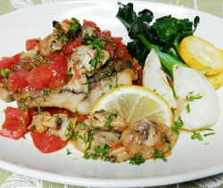

スズキのムニエル
アサリとトマトのソース添え
アサリとトマトのソース添え
- 調理時間：30分
- （一人当たり）
- カロリー：279kcal
- たんぱく質：23.6g
- 脂質：14.6g
- 炭水化物：10.7g
- 塩分：1.9g


＜２人分＞
- ・スズキ
- 2切
- ・塩、コショウ
- 少々
- ・小麦粉
- 大さじ１
- ・植物油
- 大さじ１
- ・トマト（角切り）
- 200g
- ・アサリのむき身
- 80g
- ・植物油
- 適量
- ・白ワイン
- 大さじ１
- ・塩、コショウ
- 少々
A
B
- パセリ（粗めのみじん切り）
- 少々
- レモン（半月切り）
- 適量
- ブロッコリー、ズッキーニ、カブ、などお好みで
（添えの野菜） - 適量


- スズキは、塩、コショウをして５～10分おき、出てきた余分な水分をふきとった後、小麦粉を振り、両面にまぶす。
- フライパンに油をしき、火にかける。皮目を下にして中火で焼く。焼き色がついたら裏返し、両面しっかり焼く。
一旦、フライパンから取り出しておく。 - ②のフライパンに油をしき、角切りにしたトマト、アサリのむき身をいれて火にかける。
少し炒めたら、白ワインを加えて煮詰める。塩、コショウで味をととのえる。 - お皿に②を盛り付け、トマトソースをかける。みじん切りにしたパセリを散らし、レモンを添える。
- 添えの野菜はお好みで準備する。塩、コショウでソテーする。
スズキのムニエル アサリとトマトのソース添え
不安な季節が続き、気がつけば気分が落ち込みがちに。ストレスに侵されてしまう前にセルフケアをすること、食べることが大切です。
アサリに含まれる栄養素は、亜鉛、カルシウム、鉄分など。たんぱく質代謝に関与、貧血を予防し、メンタルにも影響をあたえます。またタウリンは、肝臓のオーバーワークをフォローし、身体のだるさや疲労感の回復に役立ちます。
アサリとトマトの旨味成分は相性がよく、さらに、トマトに含まれるビタミンＣは抗ストレス作用があり、アサリに含まれる鉄分の吸収率を高めます。しっかり食べて負けない身体をつくりましょう！